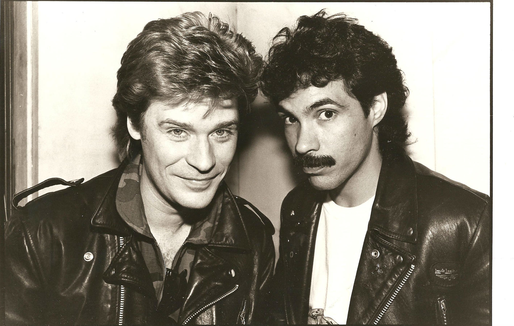
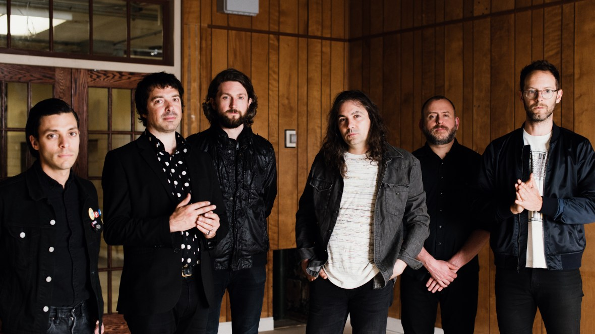
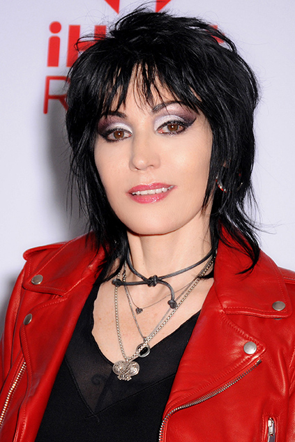

Philadelphia rock band Hall and Oates
The iconic duo from Philadelphia, Hall & Oates, have left an indelible mark on the music industry. The dynamic duo of Daryl Hall and John Oates emerged from the vibrant Philadelphia music scene of the early 1970s. Their roots in the City of Brotherly Love have significantly shaped their sound, blending rock, R&B and soul elements that are synonymous with Philadelphia's rich musical heritage. Their journey began when Daryl Hall, a student at Temple University, and John Oates, a student at the Philadelphia Conservatory of Music, met by chance at a local band competition. This meeting sparked a collaboration that would become one of the most successful duos in music history.
The War on Drugs
The War on Drugs, an indie rock band led by Adam Granduciel, emerged from Philadelphia's vibrant music scene and rose to fame, particularly with the success of their album Lost in the Dream. The city’s eclectic musical scene has clearly permeated their vast, heartland-filled sound, attracting listeners worldwide
Joan Jett and the Blackhearts
Joan Jett, from Philadelphia, joined a band called The Runaways before she was eighteen years old. This band played rock music, which greatly impacted the male-dominated rock world at the time and became a legend in the music industry. After the release of "Bad Reputation", Jett formed the Blackhearts band. In 1981, Jett released her second album "I Love Rock-n-Roll" under the name Joan Jett & The Blackhearts. This was her shining moment and the eighth album. The opening line of 1900s heavy rock,